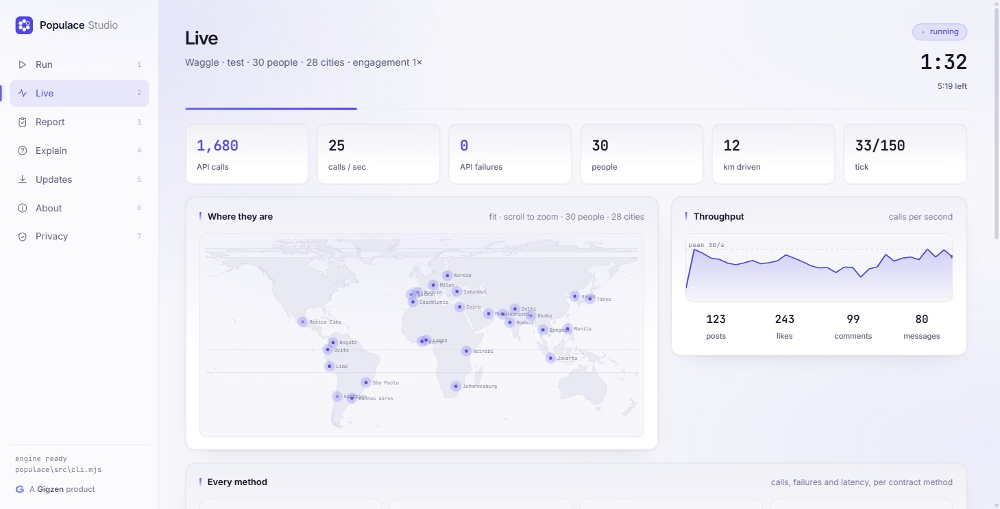
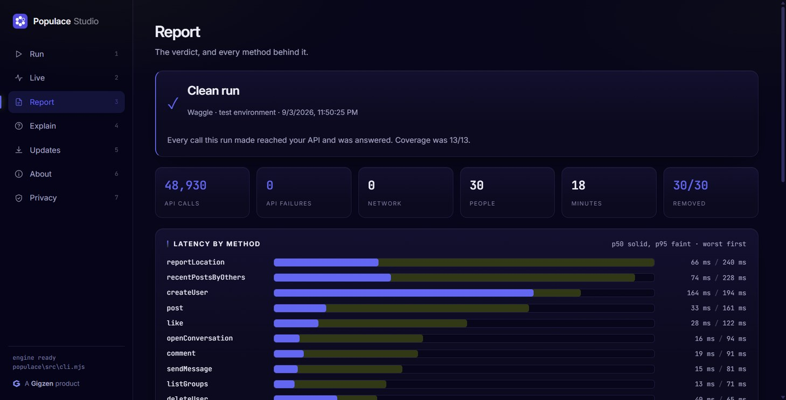

A Gigzen product
Populace fills your app with simulated people who sign up, move, post and message through your real API, all at once. Then it tells you what broke, why, and what to change. It finds the bugs that only appear when more than one person uses your software.
What it found
Six simulated drivers used Waggle, our app for delivery riders, for three and a half minutes. Waggle had already passed a full manual test of every screen. Populace found three defects in it, and one meant no new account could work. It found two in itself as well. A fourth app defect turned up later, on the run meant to sign the work off. Every run is in the test report.
Every new account came out broken. Signup wrote to a column the app is deliberately not allowed to read, and an upsert has to read every column it touches.
About one tap in four was rejected. Liking was an upsert on a table with no rule allowing updates.
The same upsert on the same unreadable column. No error on screen, and nothing saved.
Found later, on the sign-off run. The same mistake a third time, on a different table.
A wrongly named argument, and an ignored error that made the report blame the wrong method. Both fixed. The report now names the real cause.
After the fixes, the same run made 400 API calls with no failures and removed every account. On a local backend, up to 300 simulated drivers at once made 3.17 million calls with zero API failures.
Local runs prove correctness under concurrency, not speed, so their latency isn't quoted here.
Is it for you
Populace is for software where the second user is the problem. If nothing below describes your product, you don't need it.
You can, and for one flow you should. A script checks what you already suspect. A population does what people do, and finds what you didn't think to check. Nobody told Populace where Waggle's bugs were. It found the same upsert mistake three times, because six strangers signing up at once is something a test script never does.
Nothing. Free and open source under AGPL-3.0. No account, no telemetry, no paid tier.
The AGPL only matters if you offer Populace itself as a hosted service. Testing your own product, commercial or not, carries no obligation.
One adapter file. Thirteen small methods, two of them required.
populace init writes a working REST adapter with every line to change
marked EDIT. For an HTTP and JSON API, that's an afternoon.
How it works
Populace knows how to be a person: where they go, when they get bored, who they reply to. It knows nothing about your software. Everything specific to your app lives in one small adapter you write.
One file that turns “a person did something” into your API calls. Two methods
are required, createUser and deleteUser. Add the rest
as they apply.
Simulated people across real cities, each with their own habits and patience. Person n always gets the same phone number, so reruns reuse accounts instead of piling up new ones.
What broke, how often, how slow it got with everyone on at once, and what the run never reached.
The same endpoints, database and sign-in your app uses, in a test environment. Each simulated person signs in as a different user, so your server has to keep them apart.
Why: every bug Populace has found so far lived on the server, where no screen shows it.
A compiled app is a client. Driving it means automating taps, which tests the screens, not what happens when many people use them at once.
Populace works one layer below, so one adapter covers your Android, iOS and web apps together.
A trimmed version of a working adapter. If your backend speaks HTTP, yours looks like this.
// adapters/my-app.mjs — everything Populace needs to know about your app export function createAdapter(target) { const api = target.url, key = target.key; return { name: "My App", // The one method every adapter must have: make a real account. async createUser(person) { const r = await fetch(`${api}/auth/v1/signup`, { method: "POST", headers: { apikey: key, "content-type": "application/json" }, body: JSON.stringify({ phone: person.phone, password: person.password }), }); if (!r.ok) throw new Error(await r.text()); // a real failure, reported once return { id: (await r.json()).user.id, token: "…" }; }, // Say something publicly. Populace decides WHEN; you decide HOW. async post(user, text) { /* one fetch */ }, // Read other people's posts — the path one tester never exercises. async recentPostsByOthers(user) { /* one fetch */ }, // Delete the account and its data. Runs automatically after every run. async deleteUser(user) { /* one fetch */ }, }; }
Implement the two required methods and you can run. Every method you add gets exercised. Any you leave out are listed under Not tested, and any the run never reached are listed under Not exercised.
Implement the ones that apply. Coverage counts the methods a run actually called, and every gap is named.
| Method | What a person is doing | Required |
|---|---|---|
createUser | Signing up | Required |
setProfile | Filling in who they are | Optional |
refreshSession | Staying signed in past token expiry | Optional |
reportLocation | Moving through the city | Optional |
post | Posting publicly | Optional |
recentPostsByOthers | Reading other people's posts | Optional |
like | Liking someone else's post | Optional |
comment | Replying to someone else's post | Optional |
openConversation | Starting a private chat | Optional |
sendMessage | Sending a private message | Optional |
listGroups | Browsing groups | Optional |
joinGroup | Joining a group | Optional |
deleteUser | Deleting their account and data | Required |
Also optional, outside the contract: signIn, which lets cleanup look for
leftover accounts without creating any.
The report
The live run is the show. The report is the product. Anything unproven is called unproven, and there's no tolerance threshold for a real bug to hide under.
POPULACE REPORT — Demo App test · 6 people · 78.6s ──────────────────────────────────────────── ✖ Problems found: · 13 of 335 API calls failed (3.9%). YOUR API UNDER 6 CONCURRENT USERS method calls fails p50 p95 ✖ like 53 13 42ms 60ms ↳ 13× new row violates row-level security policy "post_likes_insert" reportLocation 148 0 32ms 49ms recentPostsByOthers 60 0 324ms 448ms WHAT TO DO [YOUR APP] like × 13 The database refused the write on permissions, not on data. NOT TESTED — adapter implements 12/13 · refreshSession ✔ Cleanup complete — 6 accounts removed.
Reliability
Test environments sit behind flaky VPNs, and CI machines drop connections. A tool that blames your API for a dropped connection gets ignored, and so do its real findings.
A slow endpoint becomes a timeout in the report, and everyone else carries on. One stuck call can't freeze the run.
A dropped connection is retried with backoff. An error your server actually returned is reported once, never retried until it happens to pass.
Retry counts are shown, and latency is measured on the attempt that worked, so retries can't quietly inflate your numbers.
If your server stops answering, Populace notices within seconds, stops, and says so. You don't wait out the whole run for nothing.
| Verdict | Means | Exit |
|---|---|---|
| clean | Every call reached your API and none failed. | 0 |
| problems-found | Your API returned failures. These are findings about your code. | 1 |
| inconclusive | Your API never failed, but some calls never reached it, so nothing is proven either way. | 1 |
Safety
Populace creates real accounts through your real API. Pointed at production, it would put invented people in front of real customers. So it checks three separate ways, and any one of them stops the run.
The config must say it's a non-production environment. Populace never assumes it.
List your production hosts in neverRunAgainst. Any URL pointing at
them is refused, however it's written, subdomains included.
An empty production list is flagged on every run, because forgetting to fill it in is the likeliest mistake.
Simulated people delete their accounts after every run, and populace clean
removes anything a crashed run left behind.
Get it
Two ways in, one engine. The Windows app installs like any other program and needs nothing else. The command line is the same engine for people who'd rather type.
Start a run, watch it live on a map, read the verdict, ask what a failure means,
and check for updates. Under the hood it runs the same populace
engine as the command line, so both always agree.

Thirty drivers across twenty-eight cities, driving Waggle through its own API.

The verdict from that run. The same engine has been driven against Gitea too — an application we did not write.
Populace Studio is not code-signed yet, so Windows shows “Windows protected your PC.” Choose More info, then Run anyway. If you'd rather check the file first, the checksums are alongside.
# PowerShell
Get-FileHash .\PopulaceStudio-Setup-x64.exe
Setup fb1f3fb3a07c60b70486caff83bdd5cd90091c626f7c15ff934e91816ae2d704
Portable 83ce2deadaae2d0e8160ce70c1a66e775796de09f4ab8e5ff0bf5c454b942e27
Or use the command line. Needs Node 18 or newer, and nothing else: the engine has zero runtime dependencies. It runs on macOS and Linux too. The Windows app is Windows-only for now.
# from npm npm install -g @gigzen/populace # see it work against a fake app, no setup populace demo # point it at your own app populace init populace doctor populace smoke populace run --agents 6 --minutes 5
demo runs everything against a built-in app with a bug planted in it,
so you see a real report before writing any adapter code.
No git needed. Get
populace-main.zip,
unzip it, then run node src/cli.mjs demo.
git clone https://github.com/Shakhtar-Sankur/populace.git, then
node src/cli.mjs demo. No install.
It's @gigzen/populace. A different package called
populace exists and isn't this.
A ready-made runner ships in
examples/buzzbuzz/run-test.ps1.
Reference
| Command | What it does |
|---|---|
populace demo | Run everything against a built-in app, no setup |
populace init | Create a config and a starter adapter |
populace doctor | Check config, connection and coverage without running |
populace smoke | One person, every method once, in seconds |
populace run | Run the population |
populace explain | Explain the failures in the last report |
populace clean | Delete every account a run created |
populace report | Reopen the report from an earlier run |
populace update | Check npm for a newer version |
populace version | Version and environment, for bug reports |
export default { app: "My App", adapter: "./adapters/my-app.mjs", // Must be a non-production environment. Populace checks. environment: "test", // Your production hosts. Never run against, however the URL is written. neverRunAgainst: ["https://api.myapp.com"], // Reliability settings timeoutMs: 20000, // give up waiting on one call retries: 3, // extra tries for calls that never landed giveUpAfter: 12, // unreachable calls before stopping the run population: { agents: 8, cities: ["manila", "mumbai"], minutes: 10 }, }
import { simulate } from "@gigzen/populace"; const report = await simulate({ configPath: "./populace.config.mjs", }); if (report.verdict.status !== "clean") { process.exit(1); }
Whether people want your product. Simulated people follow patterns. They won't surprise you like real customers, and they can't tell you your onboarding is confusing or your pricing is wrong.
Use Populace to prove your app works. Use real people to decide what to build.
Full name · Gigzen Populace
Gigzen is a software company in Bhubaneswar, India. We built Populace because we needed it: our own app passed a full manual test and still couldn't create a working account.